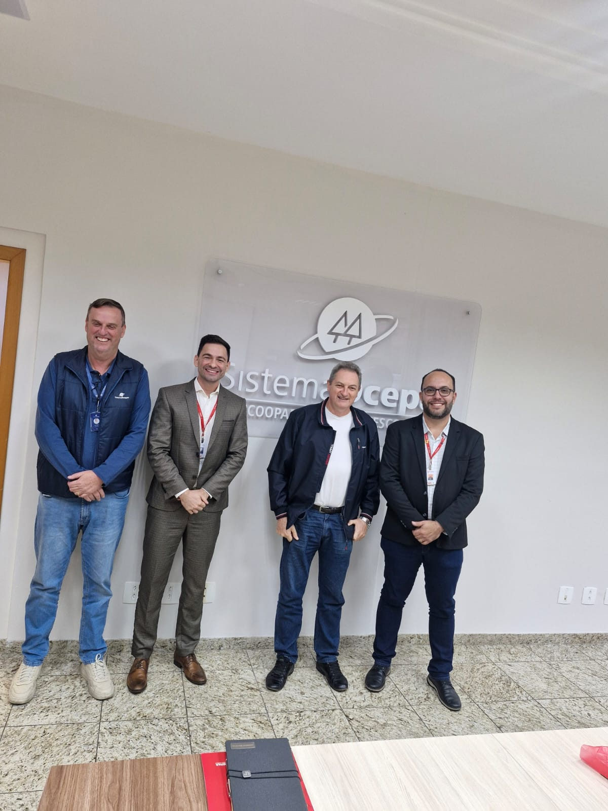
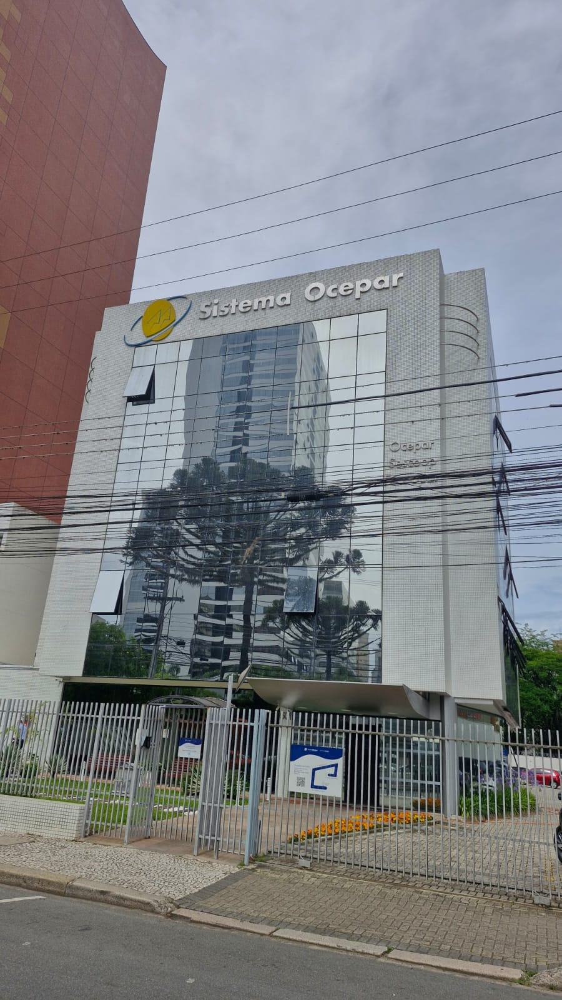
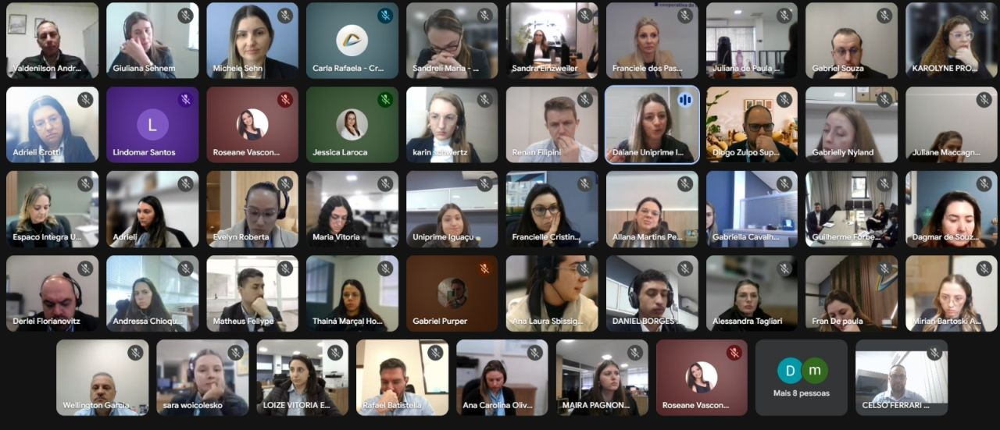

Formação, Desenvolvimento e Educação para o Cooperativismo
Sescoop Paraná
Projeto desenvolvido pela Unipar In Company em parceria com o Sescoop Paraná, com ações de formação, capacitação e desenvolvimento profissional voltadas às necessidades do sistema cooperativista e ao fortalecimento de pessoas e organizações.

Conhecimento para desenvolver pessoas e fortalecer cooperativas
O fortalecimento do cooperativismo passa diretamente pela formação das pessoas que atuam em suas organizações. Em um cenário de constantes transformações, preparar profissionais para compreender novos desafios, desenvolver competências e aplicar conhecimentos na realidade das cooperativas é fundamental para construir resultados sustentáveis.
É com essa perspectiva que a Unipar In Company, em parceria com o Sescoop Paraná, desenvolve iniciativas de educação corporativa e formação profissional conectadas às demandas do setor cooperativista.
As ações aproximam conhecimento acadêmico, experiência de mercado e realidade das cooperativas, criando oportunidades para que profissionais possam ampliar suas competências e contribuir de maneira mais estratégica para suas organizações.
Desenvolvimento de competências para os novos desafios
Os programas desenvolvidos contemplam diferentes dimensões da atuação profissional, considerando as necessidades específicas das cooperativas e os desafios contemporâneos da gestão.
Por meio de cursos, treinamentos, capacitações e programas de formação, os participantes têm acesso a conteúdos relacionados à gestão, liderança, estratégia, finanças, comunicação, inovação, tecnologia e desenvolvimento de pessoas.
A proposta é proporcionar uma formação que não se limite ao conhecimento teórico, mas que permita aos profissionais aplicar aquilo que aprendem em suas atividades e transformar conhecimento em soluções.

Conhecimento conectado à realidade das cooperativas
A parceria entre Unipar In Company e Sescoop Paraná fortalece a aproximação entre educação e cooperativismo.
Os programas são estruturados considerando as características e necessidades do setor, permitindo que os participantes discutam situações reais, compartilhem experiências e reflitam sobre os desafios presentes no cotidiano das organizações cooperativas.
Essa conexão torna o processo de aprendizagem mais significativo e contribui para o desenvolvimento de profissionais preparados para atuar em ambientes cada vez mais dinâmicos.

Preparando profissionais para liderar e transformar
Entre os diferentes eixos trabalhados nas iniciativas estão o desenvolvimento de lideranças e o fortalecimento das competências de gestão.
Líderes preparados são fundamentais para desenvolver equipes, tomar decisões, estimular a inovação e construir ambientes organizacionais capazes de responder às transformações do mercado.
Nesse contexto, a formação busca ampliar a visão dos profissionais sobre seu papel dentro das cooperativas, estimulando uma atuação mais estratégica, colaborativa e orientada a resultados.
Conhecimento que se transforma em prática
Um dos diferenciais das iniciativas está na utilização de metodologias que aproximam o conteúdo da realidade profissional.
Os participantes são estimulados a discutir situações concretas, analisar problemas, compartilhar experiências e buscar soluções para desafios relacionados ao seu ambiente de trabalho.
A presença de professores, pesquisadores e profissionais com experiência de mercado contribui para uma experiência que combina conhecimento acadêmico e aplicação prática.
Pessoas preparadas para cooperativas mais fortes
Investir na formação profissional significa investir diretamente na capacidade de evolução das cooperativas.
Profissionais mais preparados contribuem para melhorar processos, fortalecer a gestão, aprimorar o relacionamento com cooperados e construir novas possibilidades de crescimento.
Por isso, a educação corporativa assume um papel estratégico: desenvolver pessoas hoje para preparar as organizações para os desafios de amanhã.
Sescoop Paraná + Unipar In Company
A parceria demonstra a importância da união entre instituições comprometidas com a educação, o desenvolvimento profissional e o fortalecimento do cooperativismo.
O Sescoop Paraná contribui para aproximar a formação das necessidades do sistema cooperativista e para promover ações de treinamento, formação e desenvolvimento.
A Unipar In Company contribui com sua estrutura acadêmica, professores, pesquisadores e experiência na construção e execução de programas de educação corporativa.
Essa união possibilita desenvolver iniciativas alinhadas às necessidades das cooperativas e às transformações do mercado.
Formação e qualificação para o desenvolvimento do cooperativismo
A experiência construída entre Sescoop Paraná e Unipar In Company reforça o papel da educação como instrumento de desenvolvimento do cooperativismo.
Ao criar oportunidades de formação e qualificação, a parceria contribui para desenvolver profissionais mais preparados, fortalecer organizações e ampliar a capacidade de inovação e evolução do setor.
Mais do que transmitir conhecimento, a proposta é criar experiências que gerem novas perspectivas, novas competências e novas possibilidades para as pessoas e para as cooperativas.
Projeto desenvolvido pela Unipar In Company em parceria com o Sescoop Paraná, voltado à formação, capacitação e desenvolvimento profissional para o fortalecimento das pessoas e organizações que fazem parte do sistema cooperativista.
Entre as iniciativas desenvolvidas está o treinamento “ANÁLISE FINANCEIRA E INTERPRETAÇÃO DE DEMONSTRAÇÕES CONTÁBEIS PARA TOMADA DE DECISÃO”, conduzido pelo professor Valdenilson Andrean e realizado com profissionais da Uniprime do Iguaçu, em uma ação que reforça a importância da qualificação e do desenvolvimento contínuo para o aprimoramento das organizações.
A parceria aproxima a universidade do mundo do trabalho e contribui para transformar conhecimento em desenvolvimento, fortalecendo profissionais, organizações e o cooperativismo no Paraná.


Formação, desenvolvimento e educação para fortalecer o cooperativismo.
Sescoop Paraná + Unipar In Company. Uma parceria pelo desenvolvimento de pessoas, organizações e do futuro do cooperativismo.
Unipar In Company — Educação que transforma conhecimento em evolução.